4 Inferencia Espacial
KDE y IDW
4.1 Objetivos del Módulo
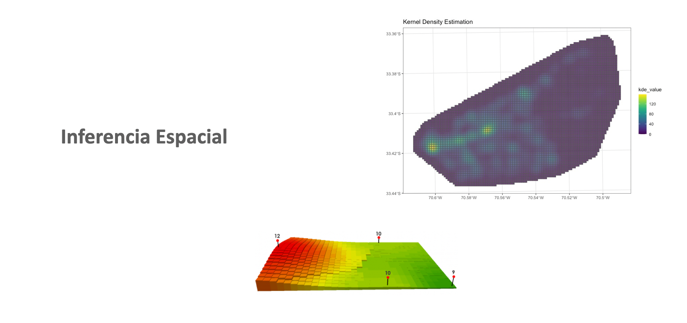
- Conocer los fundamentos teóricos básicos de la inferencia espacial
- Introducción de Kernel Density Estimation (KDE)
- Introducción de Interpolación Inverso a la Distancia ponderada (IDW)
4.2 Kernel Density Estimation
4.2.1 Introducción
Identificar el tipo de distribución que tiene a una variable es un paso fundamental en prácticamente todos los estudios que implican datos, son muchas las ventajas que tiene disponer de una función que describa aproximadamente los datos. Por ejemplo, se puede calcular la probabilidad (o densidad en el caso de variables aleatorias continuas) de que una observación tome un determinado valor. También es posible simular nuevos. valores.
En términos generales, ajustar una distribución consiste en encontrar una función matemática capaz de describir un conjunto de datos. De entre todas las posibles funciones candidatas, lo interesante es encontrar aquella que, con mayor probabilidad, puede haber generado los datos observados.
Una de las aproximaciones más prácticas es utilizar como candidatas distribuciones paramétricas, estas son distribuciones conocidas cuyo comportamiento está determinado usando un número finito de parámetros. Por ejemplo, la distribución normal está parametrizada por la media y la desviación típica.
Cuando ninguna de las distribuciones paramétricas disponibles describe correctamente los datos, es necesario recurrir lo que se conoce como métodos de ajuste no paramétricos, cuyo objetivo es encontrar funciones que describan distribuciones cualesquiera, entendiendo por cualesquiera a que no se limitan a las distribuciones paramétricas conocidas. Uno de los métodos más empleados es kernel density estimation (KDE).
4.2.2 Conceptos relacionados KDE en general
En estadística, kernel density estimation (KDE), es un método no paramétrico que permite estimar la función de densidad de probabilidad de una variable aleatoria a partir de un número finito de observaciones (muestra). Fué propuesto por Fix y Hodges (1951) y Rosenblatt (1956).
Una forma de entender cómo funciona un kernel density estimation (KDE) es partiendo del histograma. El histograma es una de las formas más utilizadas en estadística para representar la distribución de datos unidimensionales.
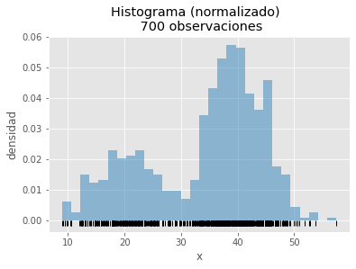
El Kernel density estimation (KDE) expande la idea del histograma, “cada observación aumenta la densidad de probabilidad en la zona donde se encuentra”, pero lo hace de forma que las contribuciones se agrupen creando una curva continua y suave (smooth).
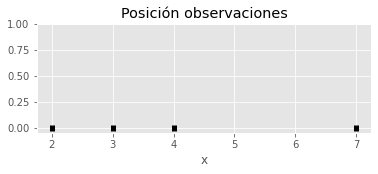
A continuación, sobre cada observación se centra una distribución normal, con media igual al valor de la observación y desviación típica de 1 (más adelante se detalla la elección de este valor).
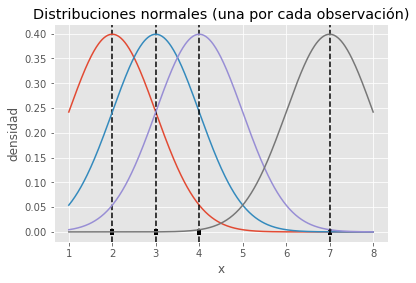
De esta forma se consigue que cada observación contribuya justo en la posición que ocupa pero también, de forma gradual, en las regiones cercanas.
Por último, si se suman las contribuciones individuales y se dividen por el total de curvas (observaciones), se consigue una curva final que describe la distribución de las observaciones.sy
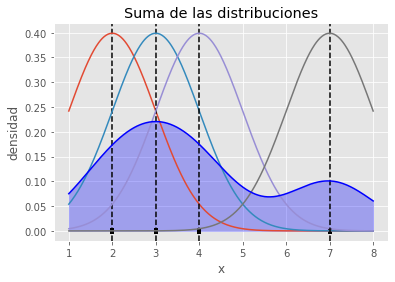
En esta idea se fundamenta el método kernel density estimation (KDE): aproximar una función de densidad como la suma de funciones (kernel) de cada observación.
Definición matemática
Dado un conjunto de datos x={x_1,x_2,...,x_n} la función de distribución de densidad f(x) puede aproximarse utilizando un kernel density estimation (KDE) tal que:
\hat{f}(x)=\frac{1}{n}\sum_{i = 1}^{n}K_h(x-x_i)= \frac{1}{nh}\sum_{i = 1}^{n}K\left(\frac{x-x_i}{h}\right) * n: es el número de datos (observaciones). Cada uno de ellos es el centro sobre el que se coloca un kernel.
h: es el ancho de banda (bandwidth o smoothing parameter). Controla cuánto se expande la influencia de cada observación. Si se emplea como kernel una distribución normal, equivale a la desviación típica. Este es el valor más determinante a la hora de ajustar un KDE, puesto que condiciona el nivel de sobreajuste.
K: es el Kernel, una función que define la forma y la distribución de la influencia (peso) que se asocian a cada observación. En los ejemplos anteriores se ha utilizado como kernel la distribución normal.
Selección de Ancho de Banda
El ancho de banda es crucial a la hora de estimar una función densidad mediante el método KDE. Si su valor es muy bajo, se genera overfitting y la función resultante estará demasiado influenciada por el “ruido” de los datos. Si su valor es muy elevado, la función resultante no será capaz de aprender la distribución subyacente.
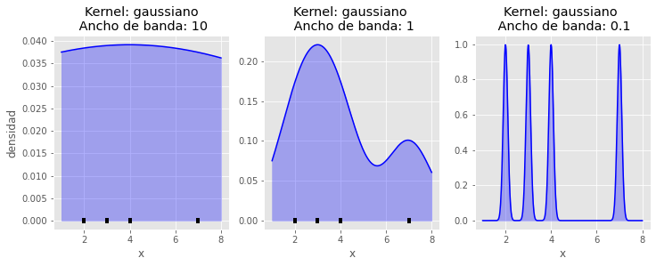
Reglas empíricas
Scott’s rule: h≈1.06 \cdot \hat{\sigma}n^{−1/5}
Silverman’s rule: h=0.9\cdot min(\hat{\sigma},IQR/1.35)n^{−1/5}
Si bien estos métodos son muy rápidos, tienen el limitante de funcionar bien solo cuando la función de densidad real es aproximadamente normal.
También se puede usar validación cruzada que requiere de mayor tiempo de computación pero es útil para cualquier tipo de distribución. Validación cruzada es la opción disponible en Scikit learn, utilizando como métrica de comparación en log-likelihood.
Es importante destacar que, cuando se dispone de pocos datos, conviene utilizar one leave out crossvalidation.
Tipos de kernel
El kernel es la función que determina cómo se distribuye la influencia de cada observación, por lo tanto, puede tener un impacto notable en la estimación de la función de densidad resultante. Aunque en la gran mayoría de casos se emplea un kernel gaussiano (distribución normal), existen otras posibilidades.
Gaussian: asigna los pesos siguiendo la distribución normal con una desviación estándar equivalente al ancho de banda.
Epanechnikov: las observaciones que están a una distancia entre 0 y h tienen un peso entre \frac{3}{4} y 0 con disminución cuadrática. Toda observación fuera de este rango tiene pero 0.
Tophat: Asigna el mismo peso a todas las observaciones que estén dentro del ancho de banda.
Exponential: el peso decae de forma exponencial.
Linear: el peso decae de forma lineal dentro del ancho de banda. Más allá de este el pero es 0.
Cosine: el peso dentro del ancho de banda es proporcional al coseno.
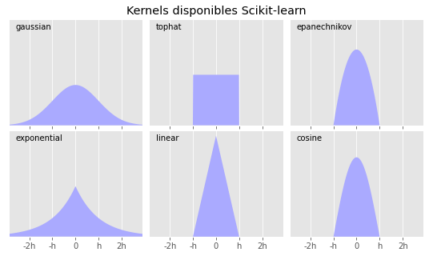
4.2.3 KDE aproximación espacial
Para entender el concepto KDE se presentó anteriormente en su forma básica correspondiente a una distribución univariada, como por ejemplo la distribución (bimodal) siguiente:
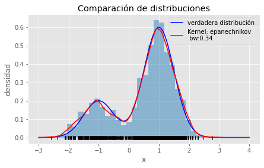
Para aplicar los KDE a casos espaciales, se tiene que entender que las variables aleatorias antes señaladas, ahora van a corresponder a eventos o condiciones físicas que ocurren en el espacio, por ende bajo un sistema de coordenadas, por lo cual el eje de coordenadas x e y que también intervienen como nuevas dimensiones, entonces los que se predente estimar una distribución multivariante.

Una de las aplicaciones más comunas es de el análisis criminal, ya que los algunas categorías delitos coproducen bajo ciertas condiciones espaciales.
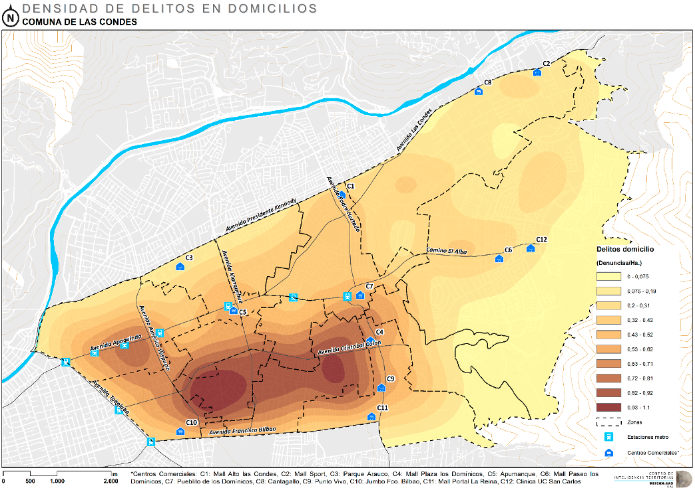
Entonces para el caso espacial lo que se prentende identificar patrones de cluster basándose en proximidad espacial
Los elementos del KDE Univariado tambien están presentes en el caso espacial como por ejemplo en ancho debanda como se observa a continuación.
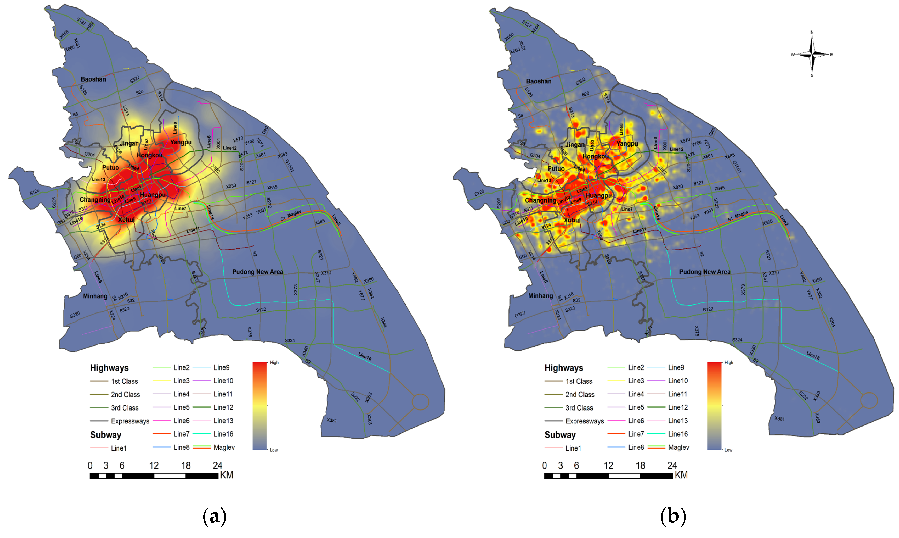
4.3 Interpolación Inverso a Distancia Ponderada IDW
4.3.1 Definiciones
Este tipo de interpolación, determina los valores de celda a través de una combinación ponderada linealmente de un conjunto de datos de puntos de muestra. Esto significa que los puntos de muestreo se ponderan de tal manera que la influencia de un punto frente a otro, disminuye con la distancia.
Cuanto más cerca está un punto del centro de la celda que se está estimando, más influencia o peso tendrá en el proceso de cálculo del promedio.
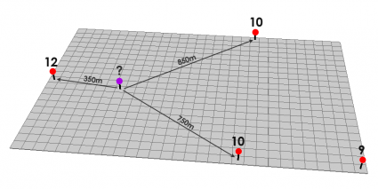
los puntos rojos tienen valores de elevación conocidos. Los otros puntos serán interpolados. Si desea medir el punto púrpura, puede configurar su interpolación para que tome un número fijo o variable de puntos. En este ejemplo, utiliza un número fijo de 3 puntos de 3 y utiliza los tres puntos más cercanos.
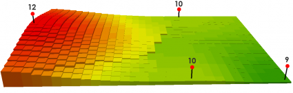
Dado que la IDW es un promedio de distancia ponderada, el promedio no puede ser mayor que la entrada máxima o inferior que la entrada mínima. Por lo tanto, no puede crear crestas o valles si estos extremos aún no se han muestreado (Watson y Philip 1985).